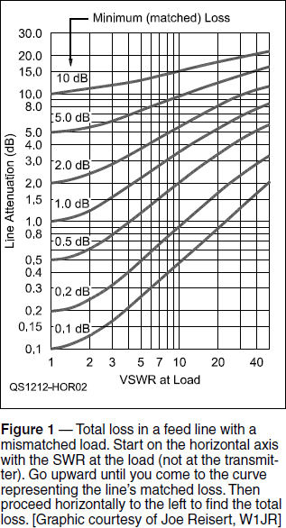
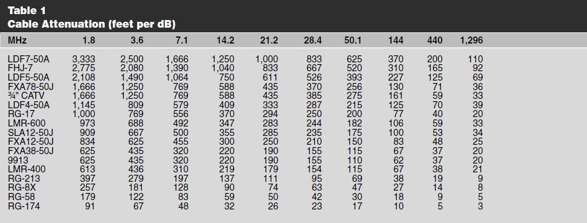

Experiment #177 — Feed Line Comparison
“Feed Lines, Decibels, and Dollars” was the title of Steve Ford’s, WB8IMY, article in the August 2017 issue of QST on choosing a feed line — but you have to have the data! His column reminded me of some important graphs and tables in The ARRL Handbook and Antenna Book that can help you make those decisions.1
I don’t know when you last purchased some new coax, but it’s sold by the foot and can cost an arm and a leg! We have limited resources to build our stations, so how do we balance feed line dollars against radio, antenna, computer, and gadget dollars? It’s not enough to say, “Just buy the best you can afford,” and hope you didn’t overspend.
Matched Loss and Non-Matched Loss
Let’s start by revisiting the term matched loss. This is the loss when the feed line is terminated in its characteristic impedance and standing-wave ratio (SWR) is 1:1, such as 50 Ω cable attached to a 50 Ω load. Matched loss is specified in dB/100 feet by most North American manufacturers, and you can get it from their websites or from tables in the ARRL reference books.
In the real world of antennas, SWR is almost always greater than 1:1. That mismatch causes some of the power to be reflected back and forth in the line until it is either radiated as a signal or turned into heat. Figuring out this extra mismatch loss can be a chore, but it has been simplified by Joseph Reisert, W1JR, in Figure 1.2

Start with the matched loss for your length of feed line. Let’s say the feed line has 2.0 dB of matched loss and the SWR at the antenna is 3:1. From 3:1 on the x-axis, go vertically to the 2.0 dB curve. Then turn left and intersect the y-axis at 2.8 dB. The 3:1 SWR “costs” another 2.8 – 2.0 = 0.8 dB of loss. This scenario isn’t very dramatic, but you can see from the graph that higher SWR and matched loss can eat up a lot of your transmitter’s output pretty quickly.
How Much You Can Tolerate
Let’s use the graph in a different way to answer the question, “What is the feed line with the highest matched loss I can accept?” This is a very common question when you are designing an antenna system. Perhaps you set a goal of not having more than 6 dB (one S-unit) of feed line loss. If you know the maximum SWR of your antenna, you have enough information to find the answer. Let’s say you have a non-resonant doublet that has one difficult band for which the SWR is 5:1.
Start on the y-axis of Figure 1 at 6 dB and follow that horizontal line across the chart. Now go to the x-axis and the vertical line for an SWR of 5:1. Where those two lines cross, interpolate between the curves to get a loss of about 4 dB (the curves are spaced logarithmically, so you have to take that into account). That’s how much matched loss you can tolerate.
Note that for a given maximum amount of allowable loss, as SWR increases the maximum matched loss goes down. That’s a little counter-intuitive until you realize that for higher SWR, you need cable that is less lossy to keep total loss below your maximum loss.
There is one more missing piece of the puzzle, and that is the length of the line between your transmitter and the antenna. Let’s say your feed line is 400 feet long — not too unusual for a Field Day or expedition-type setup. You need cable with a matched loss of 4 dB (or less) at the frequency of your “problem” band — let’s say that’s 15 meters, or 21.2 MHz.
You can start browsing through websites, but you’ll find that the loss data is typically only specified at 1, 10, 100, and 1,000 MHz. This makes the process harder than it needs to be, so Table 1 was developed by W3LPL using a feed line loss calculator created by VK1OD.3 It shows the “feet per dB” for a wide variety of coaxial cables. The lossier the cable (toward the bottom of the table), the fewer feet required to incur 1 dB of loss.

In the case of our 15-meter problem, find the column labeled “21.2.” Our matched loss budget is 4 dB and the feed line length is 400 feet, so we can accept any cable with more than 400 / 4 = 100 feet/dB of loss. If we begin at the bottom, we see that RG-174, RG-58, and RG-8X are too lossy — it doesn’t take enough cable before 1 dB of loss at 21.2 MHz has been created. RG-213 shows a loss of 111 feet per dB, so a 400-foot length will result in 400 / 111 = 3.6 dB. You could spend the extra money on a cable with less loss, but you don’t have to!
How much RG-213 could you use and still make that 4.0 dB loss budget? You could use 111 feet/dB × 4 dB = 444 feet. If you wanted to make things a little simpler and just use 500-foot spools without having to divide the cable, select a type for which it takes more than 500 / 4 = 125 feet to create 1 dB of loss. Continuing our journey up the list, LMR-400 is the first cable to make the cut, so to speak.
This is a very handy table. If you have a copy of the Antenna Book (23rd edition), take a look at Chapter 23’s section on “Choosing and Installing Feed Lines.” There you’ll find two other tables that show how long a cable would have to be before you would gain 1 dB by replacing it with 7⁄8-inch or 1⁄2-inch Heliax hardline.
Does It Really Matter?
Maybe not so much at 160 meters, but as Steve Ford’s article points out, it certainly can make a difference, particularly above HF. VHF/UHF and microwave operations are incredibly sensitive to feed line loss, because the cable losses increase quickly with frequency. At 1,296 MHz, a popular EME frequency, it doesn’t take much of even the best flexible cable before replacing it with hardline begins to pay off. And signals converted to heat can never be recovered, not even with the best antennas or preamps. Sometimes, that expensive cable is the best bargain around.
Notes
1The ARRL Handbook (2017 edition, Item 0628) and Antenna Book (23rd edition, Item 0444) are available from the ARRL Bookstore at www.arrl.org/shop.
2J. Reisert, W1JR, “VHF/UHF World,” Ham Radio, Oct. 1987, pp. 27 – 38.
3Antenna Book, 23rd edition, Table 23.4.